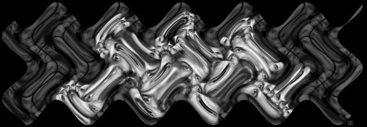

Login
· Today
?
· ID#0
McKenna
Media
·
Recent
·
Index
·
View
· Talk
?
·
δεοχψ
Search
—
WordIndex
—
FullIndex
—
SizeIndex
—
Orphans
—
UserList
Visitors
—
Changes
—
all
—
minor
—
major
Analysis
—
History
—
Raw
—
Print
—Read-only—
Random
—
Randomlist
Help
—
Stats
—
Version
Stream or download audio and video by
Terence McKenna
Audio
McKenna
—
Subpage Index
/A New Beginning
/Alchemical Dream
/Angels, Aliens and Archetypes
/Ayahuasca and its Recipes
/Cognition Factor
/Coping With Gaia's Midwife Crisis
/Dreaming Awake at the End of Time
/Earth Trust
/Eros and Eschaton
/Experiment at Petaluma
/Food of the Gods
/Global Perspectives and Psychedelic Poetics
/History Ends In Green
/I Ching-Habit and Novelty
/In the Valley of Novelty
/Interviews
/Light At The End Of History
/Linking the Past, Present and Future of Psychedelics
/Nature is the Center of the Mandala
/Non-ordinary States of Reality Through Vision Plants
/Opening The Doors To Creativity
/Places I Have Been
/Plants, Consciousness and Transformation
/Plants of Power
/Prague Gnosis
/Psilocybin and the Sands of Time
/Re-Evolution
/Riding Range With Marshall McLuhan
/Rites of Spring
/Scenario for a Psychedelic Society
/Search for the Original Tree of Knowledge
/Seeking the Stone
/Shamanism Before and Beyond History
/Shamanology of the Amazon
/Starwood
/Surfing on Finnegans Wake
/Syntax of Psychedelic Time
/Taxonomy of Illusion
/TechnoPagans At The End Of History
/The Last Interview
/This World And Its Double
/Trialogues-Metamorphosis
/Trialogues-The Evolutionary Mind
/Trip Receptacles
/True Hallucinations
/Under The Teaching Tree
/Understanding and the Imagination in the Light of Nature
/Unfolding The Stone
/Vertigo At History's Edge
/Vision Plants, The Transpersonal Challenge
—
Zuvuya art by Pete Loveday
Video
<li><a href=http://deoxy.org/videx?pop=1&q=McKenna title=http://deoxy.org/videx?pop=1&q=McKenna target=_blank>deoxy.video search results</a><p>
Archives
futurehi.net
media
LanceRules
Terence McKenna Audio
Psychedelic Salon
Terence McKenna
sheldrake.org
streaming audio
